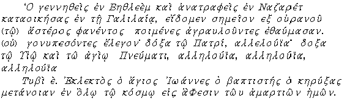

|
| A B C D E F G H I J K L M N O P Q R S T U V W X Y Z |
It is no longer possible to reconstruct completely a primitive Christian antiphonary; by a careful study of the text, however, we can establish the fact of its existence at a remote date. The extant historical texts permit us to infer that there have been, from the very earliest Christian times, groups and series of groups of antiphons. The original collection of melodies, however, grew up rather as the result of changes and combinations than of additions in the strict sense. A first and very ancient distinction seems to be that drawn between "idiomelodic" antiphon, or those fitted with special melodies, and "automelodic" anthems, adapted, by means of certain variations, to a common type of melody more or less frequently recurrent in the collection.
The list of melodies was, therefore, limited; indeed, at the early period in question, oral tradition may well have sufficed to hand down a certain number of musical formulas. When, later on, the ecclesiastical chants had been co-ordinated, it was found necessary to provide them with a notation. We learn, from several texts, that from the fourth century onward the singers commonly used either a book or a page bearing the notation of the liturgical passage which they were to sing; in many churches, however, about that time they had only the words before them, without the melody. The oldest trace of this discipline is to be found in an Egyptian papyrus belonging to the collection of the Archduke Rainier. It is ten inches wide by four inches long (26 cm. × 11 cm.); the handwriting points to about the year 300. On examination, the papyrus proves to have been long in use, the fingers of the singers having made holes where they held it. There is no great difficulty in reading it; the language used is the common Greek. We give the restored text and the translation:

"He who was born in Bethlehem, who was reared at Nazareth, and who lived in Galilee. We beheld a portent out of heaven. The shepherds who kept watch wondered at sign of the star. Falling on their knees, they said: "Glory be to The Father, alleluia; Glory be to The Son and to The Holy Spirit, Alleluia, Alleluia, Alleluia."
"Tybi the 5th (26 Dec.). Great is Saint John the Baptist, who preached penance in the whole world, for remission of our sins."
These antiphons were, probably, connected with the liturgy of the Mass; the longer one, for the Feast of the Epiphany, which carried with it the commemoration of the baptism of Christ by St. John the Baptist, was divided into three parts, serving the purpose, successively, of refrains to sections of psalms. The shorter one was a simple acrostic and was repeated after each verse.
The document just transcribed is now the sole contemporary manuscript of the ancient liturgy. For a somewhat less remote period we possess, fortunately, one of very different importance, namely, the antiphonary known as the Gregorian.
The attribution to Pope Gregory I (590-604) of an official codification of the collection of antiphons occurring in the Divine Office has at frequent intervals, exercised the wit of the learned. At the end of the ninth century John the Deacon (d. c. 882) ascribed to Gregory I the compilation of the books of music used by the schola cantorum established at Rome, by that pope. The statement, formal as it was, left room for discussion. Goussainville was the first to express (1685) a doubt as to the authenticity of the Gregorian antiphonary. He was followed by Ellies du Pin, by Dom Denys de Sainte Marthe, and by Casimir Oudin, who added nothing noteworthy to the arguments of Goussainville. In 1729, J. Georges d'Eckhart suggested Pope Gregory II (715-731) as the author of a work which tradition had for centuries ascribed to Gregory I; his arguments were more or less trivial. In 1749, Dominic Georgi took up the defence of the traditional opinion; among other arguments he brought forward a text whose full bearing on the point at issue he hardly seems to have grasped. This was a text of Egbert of York which Georgi transferred to the end of his book, in the form of a note, so that it was neither seen nor made use of. When, three years later, Vezzozi again took up the question, he also overlooked this particular text, and voluntarily deprived himself of an important argument in favour of the authorship of Gregory I. In 1772 Gallicioli followed in the footsteps of Vezzozi, but renewed the latter's concessions to the adversaries of Gregory I, nor did he make any secret of his surprise at the silence of Gregory of Tours, Isidore of Seville, and Bede, concerning that pope's liturgical and musical labours. Being only partially convinced, he refrained from any conclusion, and left the matter undecided.
It was reopened by Gerbert in 1774, and by Zaccarin in 1781, the latter of whom at last lit upon the text of Egbert. Between 1781 and 1890 no one seems to have discussed, critically, the ascription of the antiphonary to any particular pope. Indeed, the question was supposed to have been settled by the discovery of the antiphonary itself, which was said to be none other than the St. Gall manuscript 359 of the ninth or tenth century, containing an antiphonary between pages 24 and 158. This illusion passed through various phases from 1837 to 1848, when Danjou, in his turn, discovered the Gregorian antiphonary in a Montpellier manuscript of the tenth or eleventh century. In 1851 the Jesuit Lambillotte published a facsimile of the St. Gall manuscript, but the Gregorian question made no real progress.
The discussion concerning the antiphonary was suddenly revived, in 1890, by a public lecture delivered before the Belgian Academy on 27 October, 1899, by Monsieur F. A. Gevaert. The argument of the famous savant has been thus summarized by Dom Morin: "The productive period of church musical art extends from the pontificate of St. Celestine (422-432) to about the year 700, and is divided into two epochs. That of simple chant, the latest development of Græco-Roman music, includes the last years of the Western Empire, and the whole duration of the Gothic kingdom (425-563). The second, that of ornate chant, coincides with the preponderance at Rome of Byzantine policy and art. We meet with only one name, throughout the latter epoch, with which the creation of the Roman antiphonary seems to be connected; it is to Sergius I (687-701) that the honour belongs not only of having put the last touch to the Roman liturgical collections, but also of having recast all the ancient chants in accordance with a uniform melodic style, in harmony with the tendencies and tastes of the Byzantine influence. Finally, it was most probably the Syrian, Gregory III (731-741), the last but one of the Greek popes, who co-ordinated and united all the chants of the Mass in a collection similar to that which his predecessor, Agatho, had caused to be compiled for the anthems of the Day-Hours. As to the first Gregory, no evidence prior to that of John the Deacon alludes to the part ascribed to him. But there is evidence for the popes of Greek origin who lived at the end of the eighth century, notably for Agatho and Leo II. Indeed, in respect of the chant of the Church, it is very probable that the great pope took no immediate interest in this part of divine worship; much less do the antiphonary and the sacramentary which bear his name agree in any way with the ecclesiastical calendar of St. Gregory's time; if they are at all rightly called Gregorian, it must be in reference either to Gregory II (715-731) or, more probably, to his successor, Gregory III, who died in 741."
This theory called forth many refutations. Dom G. Morin set himself to prove that the traditional ascription was well founded. To this end he drew up, in chronological order, a kind of catena of the historical texts on which the tradition rested. In addition to the statement of John the Deacon, he brought forward that of Walafrid Strabo (d. 840), whose meaning is perfectly clear. These texts, however, are of a late date. The previously mentioned text of Egbert, Bishop of York (732-766), is nearly a hundred years earlier. In his dialogue entitled De institutione ecclesiasticâ, and in a sermon for the second fast of the fourth month, Egbert formally ascribes the composition of both the antiphonary and the sacramentary to Saint Gregory, the author of the conversion of England: noster didascalus beatus Gregorius. At a somewhat earlier period, Aldhelm of Sherburne (d. 709) also bore witness to St. Gregory's authorship of the sacramentary, but said nothing concerning the antiphonary. In another essay Dom Morin reviewed critically all the texts relating to the antiphonary known as Gregorian. Though mostly of a late date, they owe to their mutual agreement an appreciable historical value. There are, however, other and more ancient texts, which, it would seem, ought to close the controversy. Dom Morin's catena seems to end with Egbert, between whom and St. Gregory I there was an interval of at least one hundred and ten years. This, whatever an optimistic writer might be led to say, was no inconsiderable space of time; for an historian more concerned with truth than with fancy it was impossible to regard it as of no importance. Monsieur Gevaert laid stress (1895) on the silence of those writers who might be expected to supply the most direct evidence. The silence, as it proved, was less complete than had been supposed. In the very year (732) that Egbert was raised to the See of York another prelate, Acca of Hexham, was forced to resign the office which he had held since 709. Bede appears to have been one of Egbert's friends from that time onward, which enables him to inform us (H. E., V, 20) that Acca had learned the ecclesiastical chant from a certain Maban, who had acquired it, himself, while living in Kent, from the successors of the disciples of the Blessed Pope Gregory. Acca had, in fact, spent twelve years in Maban's school. If we take 732 as the last of these twelve years, it follows that the first lessons given by Maban go back to the year 720, at which date Maban had had time to be trained by the successors of the disciples of Pope Gregory. Gregory II became pope in 715; a space of five years is, evidently, not easy to reconcile with the plain meaning of what Bede says. It is true that, at a stretch, it might be understood thus: Maban was taught in Kent, between 715 and 720, by pupils trained on the spot by Roman singers sent by Gregory II. But, apart from the fact that no such mission has been ascribed to Gregory II, the words of Bede are too plain to permit this evasion of the difficulty. Bede in fact tells us that the chant taught by Maban (about 720) was simply a reform of the same chant which had undergone certain changes by long use. It is evidently impossible, then, to explain how, between 715 and 720, Maban could instruct Acca in a chant which had been long in use, and which had so fallen away from its purity as to need reform, when, if its promoter were Gregory II, it dated, at the earliest, from five years previous. It seems, therefore, as though these words of Bede were equivalent to an early Anglo-Saxon ascription of the ecclesiastical chant to Pope Gregory I.
Speaking of Putta, Bishop of Rochester (669-676), the same historian says (H. E., IV, 2): "He was above all things skilful in the art of singing in church according to the Roman fashion, which he had learned from the disciples of the Blessed Pope Gregory". There can be no doubt in this case, nor can anyone but Gregory I be meant. Thus the gap between St. Gregory and Egbert (604-732) becomes greatly lessened, almost, indeed, by a half, and Bede's silence can no longer be appealed to in connexion with the work of St. Gregory. Evidence for his authorship of the ecclesiastical chant is met with at a period so near Gregory's own time that the thesis is critically tenable. Does it follow that St. Gregory was, as John the Deacon says, the compiler of the antiphonary? There are, at least, good reasons for thinking so. One last argument may be cited on his behalf. The series of antiphons in the antiphonary, intended to be sung at the Communion during Lent, are for the most part taken from the Book of Psalms. Their order reveals the idea that governed the choice of them. With certain exceptions, to be referred to presently, the antiphons follow one another in the numerical order of the Psalms from which they are drawn. The series thus obtained begins on Ash Wednesday and ends on the Friday in Passion Week, forming a regular succession of Psalms from 1 to 26, except for the interruptions caused (1) by intercalations and (2) by lacunæ.
These intercalations affect (1) the five Sundays, (2) the six Thursdays, (3) the Saturday following Ash Wednesday. The exclusion of the Sundays is explained by the adoption of a ferial, or week-day, sequence; that of the Thursdays by the simple observation that the Thursdays were not included in the liturgical system for Lent at the period when Psalms 1 to 26 were divided between the other days of the week. We learn from the Liber Pontificalis that it was Gregory II who introduced the Thursday of each week into the liturgical system of Lenten Masses. Now it proves to be these very Thursdays which interrupt the order that the remaining days of the week would otherwise show. No more precise and decisive accumulation of proof could possibly be wished for. We thus grasp the chronological element at the moment of its interpolation into the very heart of the antiphonary. Gregory II — therefore still less Gregory III — is not the original author of the compilation whereon he has left his mark by misunderstanding the principle which governed its original formation. The musical compilation known as the antiphonary is therefore not due to Gregory II, nor is it from him that it has become known as the Gregorian antiphonary. Its existence prior to his time is proved by the intercalation of the Thursdays which interrupt the continuity of an harmonious arrangement, to which Gregory II paid no attention, though possibly he may rather have wished to respect it as a work thenceforward irreformable, as a traditional deposit which he refused to disturb and re-order. It is not easy to say, or even to convey an idea of, what this primitive edition of the antiphonary may have contained; but there can be no doubt that it contained in their actual order the Lenten communion-antiphons, and is certainly anterior to Gregory III and to Gregory II. This fact alone proves the existence of an antiphonal collection, known as the Gregorian antiphonary, prior to the time of Pope Gregory II.
GEVÆRT, Le Chant liturgique de l'église latine, in the Bien Public (23, 24 December, 1889); DOM MORIN, Le rôle de Saint Grégoire le Grand dans la formation de répertoire musical de l'église latine, in the Revue bénédictine (1890, p. 62 sqq.; 193-294; 289-323; 337-369). Some of these essays have been collected under the title of Les véritablees origines du chant grégorien (Maredsous, 1895, octavo; 2d ed., 1904); GRISAR, Hist. Gregor der Grosse den Kirchengesang reformirt, in Zeitschrift für kathol. Theol. (1890); GEVÆRT, La mélopée antique dans le chant de l'église latine (Ghent, 1895, octavo); LECLERCQ, in the Dict. d'arch. chrét. s.v. antiphonaire (I, col. 2440-62).
APA citation. (1907). Gregorian Antiphonary. In The Catholic Encyclopedia. New York: Robert Appleton Company. Retrieved April 26, 2010 from New Advent: http://www.newadvent.org/cathen/01579a.htm
MLA citation. "Gregorian Antiphonary." The Catholic Encyclopedia. Vol. 1. New York: Robert Appleton Company, 1907. 26 Apr. 2010 <http://www.newadvent.org/cathen/01579a.htm>.
Transcription. This article was transcribed for New Advent by WGKofron. With thanks to Fr. John Hilkert, Akron, Ohio.
Ecclesiastical approbation. Nihil Obstat. March 1, 1907. Remy Lafort, S.T.D., Censor. Imprimatur. +John Cardinal Farley, Archbishop of New York.
Contact information. The editor of New Advent is Kevin Knight. My email address is webmaster at newadvent.org. (To help fight spam, this address might change occasionally.) Regrettably, I can't reply to every letter, but I greatly appreciate your feedback — especially notifications about typographical errors and inappropriate ads.